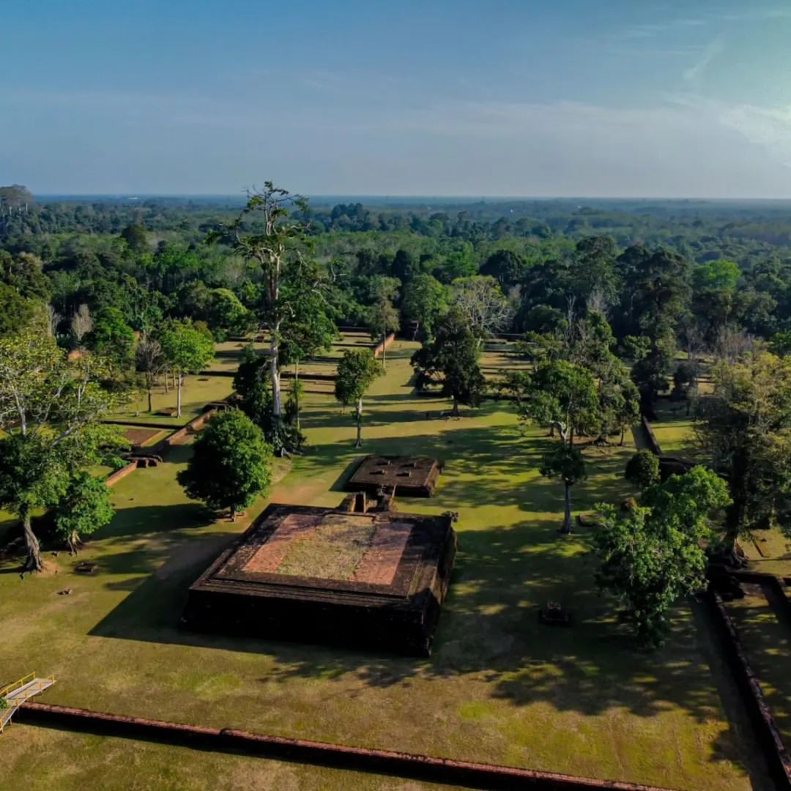

Candi Kedaton
Candi Kedaton adalah nama dua situs bersejarah penting di Indonesia, yakni Candi Kedaton di Muaro Jambi, Sumatera, dan Candi Kedaton di Probolinggo, Jawa Timur. Candi Kedaton Muaro Jambi merupakan bagian dari kompleks percandian Hindu–Buddha terbesar di Asia Tenggara, berdiri di atas lahan seluas hampir 4.000 hektar dan diperkirakan dibangun pada masa kejayaan Sriwijaya dan Melayu kuno, sekitar abad ke-7 hingga ke-13, dengan ciri utama berupa bangunan bata merah, sumur bata, belanga perunggu, serta ukiran makara bertuliskan “Mpu Kusuma” di gerbangnya. Sementara itu, Candi Kedaton Probolinggo, yang juga dikenal sebagai Candi Sumur Upas, adalah peninggalan Majapahit abad ke-14 dari batu andesit berukuran 6×6 meter dan dihiasi relief epik seperti Arjunawiwaha dan Bhomantaka, dipercaya sebagai tempat pertapaan dan jalur pelarian raja, meski kini minim fasilitas dan perlu perawatan lebih lanjut. Kedua candi ini sama-sama menjadi saksi kejayaan peradaban masa lalu dan hingga kini menarik minat wisatawan, arkeolog, dan peneliti untuk menggali makna sejarah dan nilai budayanya.